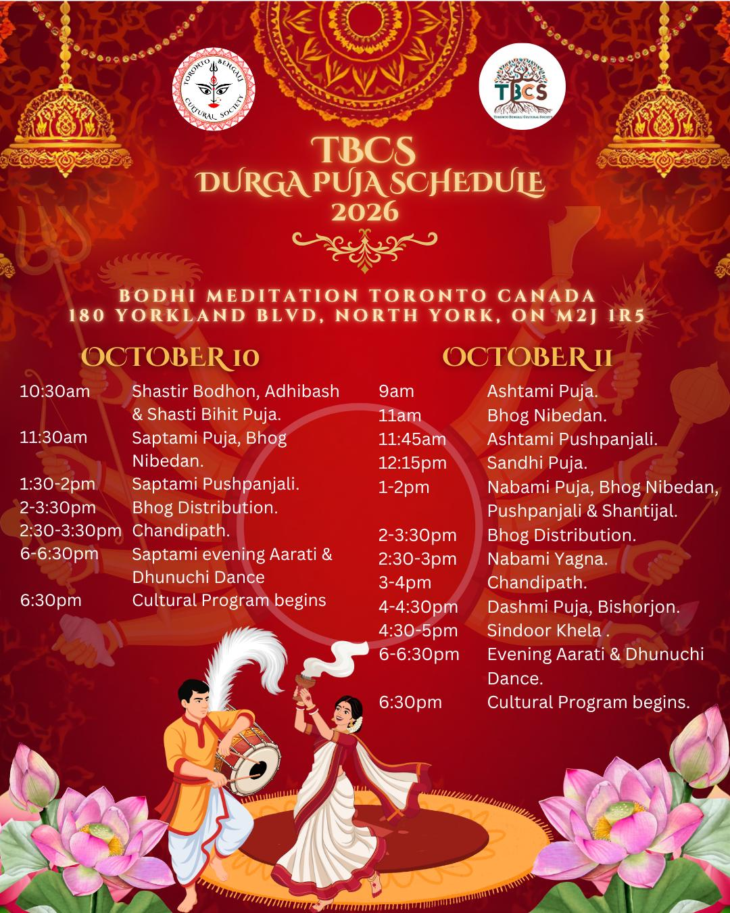

TBCS Durga Puja Event Details
Two full days of ritual, culture, and community — everyone is welcome, whether you're joining for one evening or the whole Pujo.
Full Schedule of Rituals & Programs
October 10
Saturday · Shashthi & Saptami- 10:30 AM
Shastir Bodhon, Adhibash & Shasti Bihit Puja
- 11:30 AM
Saptami Puja, Bhog Nibedan
- 1:30–2:00 PM
Saptami Pushpanjali
- 2:00–3:30 PM
Bhog Distribution
- 2:30–3:30 PM
Chandipath
- 6:00–6:30 PM
Saptami Evening Aarati & Dhunuchi Dance
- 6:30 PM
Cultural Program Begins
October 11
Sunday · Ashtami, Nabami & Dashami- 9:00 AM
Ashtami Puja
- 11:00 AM
Bhog Nibedan
- 11:45 AM
Ashtami Pushpanjali
- 12:15 PM
Sandhi Puja
- 1:00–2:00 PM
Nabami Puja, Bhog Nibedan, Pushpanjali & Shantijal
- 2:00–3:30 PM
Bhog Distribution
- 2:30–3:00 PM
Nabami Yagna
- 3:00–4:00 PM
Chandipath
- 4:00–4:30 PM
Dashami Puja, Bishorjon
- 4:30–5:00 PM
Sindoor Khela
- 6:00–6:30 PM
Evening Aarati & Dhunuchi Dance
- 6:30 PM
Cultural Program Begins

Printable schedule flyer — save or share with family and friends.
Bodhi Meditation Toronto
[PLACEHOLDER] A short description of the venue — parking availability, accessibility, and directions from major highways/transit.
Get DirectionsBhog & Food Stalls
[PLACEHOLDER] Traditional bhog served daily, plus street-food-style stalls with Bengali favourites for purchase.
Khichuri Bhog
[PLACEHOLDER] Served after afternoon aarti, free for all attendees.
Food Stalls
[PLACEHOLDER] Fuchka, chop, biryani, and mishti from local vendors.
Sweets Corner
[PLACEHOLDER] Rosogolla, sandesh, and more available to purchase and take home.
TBCS Volunteers Needed
No experience required — we want your positive spirit and optimistic attitude. Volunteer hours will be provided to all participants after the event.
- Parking & traffic management
- Crowd coordination
- Event set-up and clean up
- Food distribution
- Registration desk assistance
- Security management
- Vendor assistance

See you at TBCS Durga Puja 2026
Two days of ritual, music, and food at Bodhi Meditation Toronto — everyone is welcome.